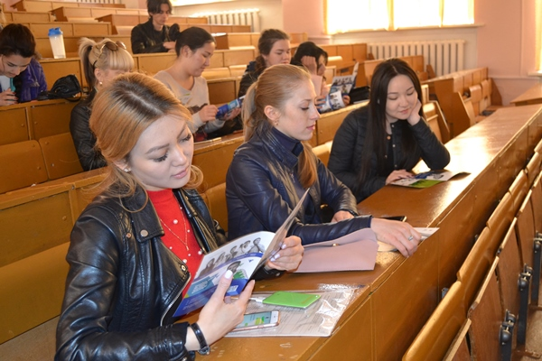
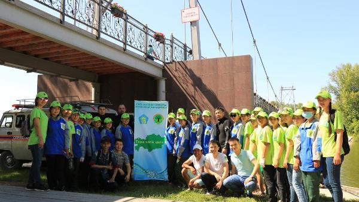
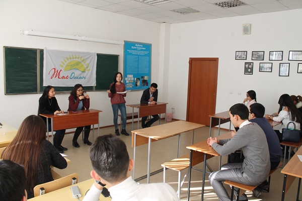
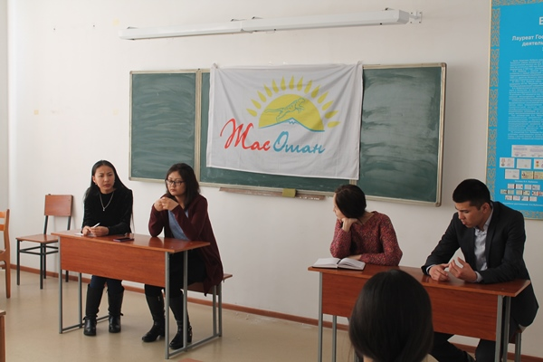

|
В Северо-Казахстанской области состоялась презентация проектов «Жас Өркен» и «MethodPRO» | 31 мая 2017 , 17:29 |
|
|  | В Северо-Казахстанской области состоялась презентация проектов «Жас Өркен» и «MethodPRO» | 31 мая 2017 , 17:29 |
|
|  | Акция «Чистый Чаган - чистый берег» | 30 июня 2017 , 17:19 |
|
 |
Усть-Каменогорские жасотановцы помогли ветерану в домашнем хозяйстве | 22 июня 2017 , 15:49 |
Вернуться назад
Усть-Каменогорские жасотановцы помогли ветерану в домашнем хозяйстве22 июня 2017 , 15:49 Добровольцы направились к жительнице поселка Ахмер города Усть-Каменогорск пенсионерке, учителю со стажем, ветерану труда Макен Рахимовне. Волонтеры очищали двор от сорняков, выносили мусор и собирали железосодержащие предметы. Ветеран труда, оставшаяся без попечителя, выразила глубокую благодарность за проявленную помощь и поделилась воспоминаниями молодости и достижениями в работе. Жасотановцы быстро справились с поставленной задачей и услышали благие пожелания из уст радостной Макен Рахимовны. 
«Увидев молодых людей, я очень обрадовалась. Молодые люди аккуратно и быстро помогли мне. Хочу поблагодарить родителей этих ребят, которые дали правильное воспитание» – говорит ветеран труда, учитель Макен Рахимовна.
Группа волонтеров МК «Жас Отан» сформированная в рамках проекта «Жастар Отанға!» не раз встречались с ветеранами и проявляли свою заботу. Уважайте старших и почитайте ветеранов! Вернуться назад |
|  | В Алматы прошел дебатный турнир в целях разъяснения основных направлений Послания Президента | 24 февраля 2017 , 18:36 |
Вернуться назад
В Алматы прошел дебатный турнир в целях разъяснения основных направлений Послания Президента24 февраля 2017 , 18:36 23 февраля в зале заседания Казахского национального университета имени аль-Фараби в целях разъяснения основных направлений Послания Президента «Третья модернизация Казахстана: глобальная конкурентоспособность» прошел дебатный турнир среди студентов на тему «Объединение агропромышленных комплексов в кооператив». Организаторы турнира Бостандыкское районное отделение молодежного крыла «Жас Отан». 
В ходе турнира участники обсуждали основные приоритеты Послания, высказывали свое мнение о том, каким должен быть гражданин своей страны, показывали значение Президента и Конституции в жизни народа и государства. «Глава государства Н.А.Назарбаев в своем традиционном Послании к народу поставил ряд ключевых задач по реформированию экономики и обеспечению глобальной конкурентоспособности Казахстана. Он отметил, что аграрный сектор должен стать новым драйвером экономики. В ходе сегодняшнего мероприятия участники дискутировали на темы касательно пяти приоритетов Третьей модернизации. Также обменялись идеями и мнениями по насущным вопросам, показали свои знания, ораторские способности. Отрадно, что сейчас дебаты получают такое широкое развитие, что дает возможность молодежи развивать критическое мышление, гражданскую активность», – отметил руководитель Бостандыкского районного отделения МК «Жас Отан» Дуйсебай Байдибек. Все участники турнира были награждены благодарственными письмами. Вернуться назад |
| В Северо-Казахстанской области состоялась презентация проектов «Жас Өркен» и «MethodPRO» | 31 мая 2017 , 17:29 |
|
|
| В Северо-Казахстанской области состоялась презентация проектов «Жас Өркен» и «MethodPRO» | 31 мая 2017 , 17:29 |
|